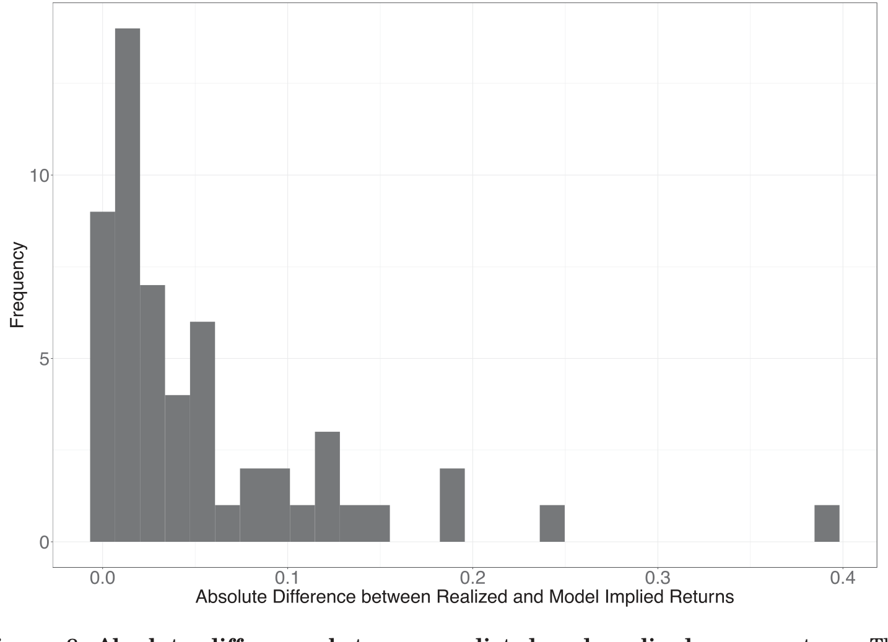
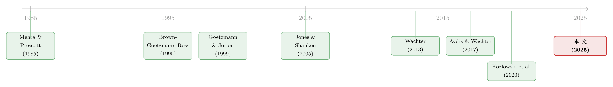

美国只是侥幸活下来的那一个吗？
本文读的是 Van Binsbergen, Hua, Peeters & Wachter (2025, Journal of Finance)：作者用 55 个国家的股票总收益数据，构建了一个让投资者「跨国学习」崩盘概率的分层贝叶斯模型，发现幸存者偏差大约能解释过去一个世纪美国股权溢价的三分之一；其中「运气」与「学习」合起来，可以从 6% 的历史股权溢价里啃掉整整 2 个百分点。
1 引言：一个被反复讲述、却始终讲不圆的故事
股票比短久期债券每年多赚大约 6%。这个数字几乎是现代资产定价的「原罪」——它太大了，大到用主流的、基于消费的资产定价模型怎么都解释不通，于是有了那个家喻户晓的名字：股权溢价之谜 (equity premium puzzle, Hansen and Singleton (1982); Mehra and Prescott (1985))。
过去四十年，文献为它开出过各种药方：更丰富的消费增长动态、更精致的效用与信念设定、税收……这些努力大多沿着同一个方向——既然历史数据摆在那里，那就让模型去「配得上」这 6%。
但本文走的是另一条路。它要问的不是「如何解释这 6%」，而是一个更让人不安的问题：
这 6%，会不会有相当一部分根本就不该被算进来？
为什么这么问？因为我们用来估计美国股权溢价的那段历史，本身就是被「挑选」过的。美国从两次世界大战里全身而退，古巴导弹危机也和平收场、没有伤筋动骨。可是站在二十世纪初一个早期投资者的角度，这一切都不是注定的。文章举了一个让人印象深刻的反例：阿根廷在样本早期曾是全球最富的十个国家之一，增长一度超过加拿大和澳大利亚——然后呢？短暂的繁荣之后是漫长的衰退与停滞，今天它被归为新兴市场。事后看，二十世纪初买阿根廷股票是个糟糕的决定；可事前，投资者明明对它抱有很高的期望。
这正是幸存者偏差 (survivorship bias) 的精髓：我们只看见了活下来的那一个，于是高估了「活下来」这件事的概率，也就高估了它的事前预期收益。
2 张力所在：从「数横截面」到「学崩盘」
幸存者偏差的故事并不新。Brown, Goetzmann, and Ross (1995) 把「生存」建模成价格水平不触及某个吸收下界，证明只要对「价格从未跌破下界」这个条件取条件期望，就足以制造出一个看起来很大的股权溢价。Goetzmann and Jorion (1999) 则更直接：他们研究了一大批国家的横截面，发现一个市场存活得越久、它的平均已实现收益就越高——这恰恰是幸存者偏差留下的指纹。
那么，本文相比这些前辈，多走了哪一步？
首先，它把样本扩到了 55 个国家的总收益指数（注意是 total return，包含了分红——而 Goetzmann and Jorion (1999) 主要用的是不含分红的资本增值指数，这在样本早期会漏掉很大一块真实收益）。
接着，一个自然的问题是：光有更大的横截面还不够。你怎么把「别的国家崩过盘」这件事，翻译成「美国本该面对多大的崩盘风险」？这中间需要一座桥。
然后，真正关键的一步出现了：作者不再只是被动地「数」各国的已实现收益，而是显式地写下一个投资者——她活在历史的每一个时点上，只能用当时能看到的信息，去推断美国的崩盘概率。而她推断的方式，是从整个国家横截面里「借力」。
这就把一个统计学问题，变成了一个关于信念形成的问题。我们不再问「美国事后看运气好不好」，而是问「一个理性的贝叶斯投资者，在每个时点上,会相信美国的崩盘风险有多大」。把这条信念的轨迹画出来，再和事后真正发生的收益对比，幸存者偏差的大小就被直接量了出来。
3 模型：分层贝叶斯与「借来的先验」
这是一篇有模型的论文，而且模型是它的灵魂。我们一步步来。
第一层：崩盘是怎么定义的。 作者用了一个极简的阈值规则——某一年的股票收益低于某个截断值就算一次「崩盘」。主分析用的阈值是 −30%，并且作者验证了在 −20% 到 −35% 这个区间内结论稳健。于是每个国家、每一年都有一个崩盘指示变量 \(D_{i,t}\)，崩了取 1，没崩取 0：
$$D_{i,t} \mid p_i \ \stackrel{i.i.d.}{\sim}\ \text{Bernoulli}(p_i).$$
这里 \(p_i\) 是国家 \(i\) 的「真实」崩盘概率，是个潜变量，谁也直接看不见。
第二层：所有国家共享一个先验。 这是「分层」(hierarchical) 二字的来历。作者假设每个国家的崩盘概率 \(p_i\) 都是从同一个 Beta 分布里抽出来的：
$$p_i \mid \alpha,\beta \ \sim\ \text{Beta}(\alpha,\beta) \quad \forall i.$$
第三层：投资者对这个共享先验本身也不确定。 她对 \(\alpha,\beta\) 还有一个超先验 (hyperprior) \(f(\alpha,\beta)\)。
三层叠起来，用贝叶斯法则把所有参数的联合后验写出来，就是论文的式 (1)：
$$f\big(\{p_i\},\alpha,\beta \mid \{D_{j,t}\}\big) \ \propto\ \prod_{i=1}^{n} p_i^{\,Y_{i,\tau}+\alpha-1}(1-p_i)^{\,\tau-Y_{i,\tau}+\beta-1}\, f(\alpha,\beta),$$
其中 \(Y_{i,\tau}=\sum_{t=1}^{\tau} D_{i,t}\) 是国家 \(i\) 到 \(\tau\) 期为止数到的崩盘次数。
由于 Beta 是 Bernoulli 的共轭先验，给定 \(\alpha,\beta\) 时，单个国家的条件后验还是个 Beta，这就是式 (2)：
$$p_i \mid \alpha,\beta,\{D_{j,t}\} \ \sim\ \text{Beta}\big(Y_{i,\tau}+\alpha,\ \tau-Y_{i,\tau}+\beta\big).$$
这个式子有一个特别漂亮的解读：在每个时点 \(\tau\)，投资者把「本国数到的崩盘次数」和一份「先验伪样本」拼在一起——这份伪样本相当于在 \(\alpha+\beta\) 次观测里见过 \(\alpha\) 次崩盘。而这份伪样本，正是被全样本不断更新的。
3.1 核心方程：收缩，是数据驱动的
把式 (2) 的后验均值 \((Y_{i,\tau}+\alpha)/(\tau+\alpha+\beta)\) 改写成一个加权平均，就得到了我认为全文最该被讲透的一个方程——论文的式 (5)：
读懂了这个加权平均，就读懂了整篇文章的机制。投资者对一国崩盘风险的估计，是「本国自己数出来的频率」和「全球平均」之间的一个收缩 (shrinkage)：
- 一个像爱沙尼亚那样只有 23 年历史的新兴市场，\(\tau\) 很小，权重几乎全压在全球均值上——它自己那点数据不够看，只能大量向横截面借力；
- 而美国有又长又连续的价格史，\(\tau\) 很大，收缩的力度被大大削弱——它基本上是「自己说了算」。
作者还把收缩的方向写成了式 (6)：当全球崩盘风险被估计得越精确（\(\alpha+\beta\) 越大），那些「比平均更危险」的国家后验会被压低、「比平均更安全」的国家后验会被抬高。换句话说,高风险国家向下收缩、低风险国家向上收缩，都朝着共同均值靠拢。
这一步对美国意味着什么？美国在样本里几乎没崩过盘（用 Shiller 数据，1870–1920 这 50 年里只有一次崩盘）。如果只看美国自己，你会得出一个极低的崩盘概率。但分层结构会把别国发生过的崩盘，部分地「加」到美国头上——因为这些灾难本可以发生在美国，只是没发生。于是美国的主观崩盘信念被向上修正，事前预期收益被拉低，而这部分「没被实现的下行风险」的补偿，恰恰就是混进 6% 里的幸存者偏差。
3.2 超先验：把「全球平均崩盘风险」摆在哪里
要让模型跑起来，还得给 \(\alpha,\beta\) 一个超先验。作者做了一个聪明的变量替换，让参数变得可解释：
$$\varphi = \frac{\alpha}{\alpha+\beta}, \qquad \lambda = \alpha+\beta.$$
这里 \(\varphi\) 就是全球平均崩盘风险，\(\lambda\) 是「有效样本量」，控制着崩盘风险在各国之间的离散程度。作者设了三档先验，并验证结果对它们稳健：
- 无信息先验：\(\varphi \sim \text{Uniform}[0,1]\)，\(\lambda \sim \text{Pareto}(1,0.5)\)。理论上最干净，但它隐含「全球平均崩盘风险是 50%」这种极端假设；
- 半信息先验：\(\varphi \sim \text{Uniform}[0,0.35]\)，\(\lambda \sim \text{Pareto}(1,2.5)\)，全球平均崩盘风险约 17%、横截面标准差约 6%；
- 信息先验：\(\varphi \sim \text{Beta}(2,98)\)，\(\lambda \sim \text{Pareto}(1,2.5)\)，全球平均崩盘风险均值约 2%、横截面变异约 0.8%。这个 2% 正是用美国 1870–1920 那「50 年一次崩盘」校准出来的。
关键不在于先验取哪一档，而在于：无论从哪一档出发，随着样本推进，美国的主观崩盘信念都会和「隐含的全球平均崩盘风险」持续地、越来越大地背离，尤其在二十世纪下半叶。这个「持续背离」就是幸存者偏差的可视化证据。
4 主要结果：运气、学习，与那道「学习楔子」
把上面的机器跑起来，作者用一套前沿的马尔可夫链蒙特卡洛 (Markov chain Monte Carlo, MCMC) 算法——具体是哈密顿蒙特卡洛 (Hamiltonian Monte Carlo, HMC)——逐时点复刻投资者的信息集，得到她每个时点的后验崩盘信念。
结论有几层：
第一，幸存者偏差不是小数目。 把美国主观崩盘信念的下行趋势放进一个均衡框架里，崩盘风险（也就是灾难风险）的长期下降，会带来股权溢价的下降和估值比率的上升。而随着投资者「学到」真实的数据生成过程、把未来崩盘概率一路调低，每一次下调都会带来正的收益实现——这些正收益累积起来，正是我们事后看到的那 6% 平均超额收益的一部分。作者把历史溢价与真实预期溢价之间的这道缺口，命名为学习楔子 (learning wedge)。总体上，幸存者偏差解释了过去一个世纪股权溢价的大约三分之一。
第二，「运气」和「学习」可以被分开核算。 有了一个定义良好的灾难后验信念，作者得以评估美国股市经历里到底有多少「运气」成分。结论是：运气与学习合起来，从 6% 的历史股权溢价里解释了 2 个百分点——这让股权溢价之谜显得没那么「谜」了，正如 Avdis and Wachter (2017) 早先指出的那样。
下面这张图，把模型「事前预测的平均收益」和「事后实现的平均收益」之差画了出来——跨国学习把这个缺口实实在在地缩小了，这正是学习楔子在数据里的体现。

Figure 8: Absolute difference between predicted and realized mean return. The
第三，对先验稳健。 三档超先验给出的结论方向一致：美国的崩盘信念相对全球均值持续上偏、且越拉越开。
5 文献脉络
把这条线索捋一捋，会看到三股水流在本文汇成一处。
第一股，是股权溢价之谜本身：Mehra and Prescott (1985) 立题，随后一派人（Campbell and Cochrane (1999)、Bansal and Yaron (2004)、Wachter (2013)）试图用更丰富的偏好与消费动态去「解释」它，另一派（Cochrane (1997)）则质疑这个谜在经济与统计上的稳健性。本文站在后一派。
第二股，是罕见灾难 (rare disasters)：从 Rietz (1988) 提出用灾难风险解释溢价，到 Barro (2006) 用二十世纪的国际数据把它做实，再到 Gabaix (2012)、Wachter (2013) 的可变灾难框架。本文的不同在于：它不假设灾难的幅度，而是聚焦投资者最在意的下行崩盘频率，并且——这点尤其关键——允许投资者在样本里从未亲眼见过崩盘的情况下，依然把崩盘当成一种可能（这比 Kozlowski, Veldkamp, and Venkateswaran (2020) 那种「见过才学得到」的非参数学习更保守）。
第三股，是横截面学习与幸存者偏差：Brown, Goetzmann, and Ross (1995) 把生存建成吸收边界，Goetzmann and Jorion (1999) 在国际横截面里抓到幸存者偏差的指纹。而方法论上真正的「父本」，是 Jones and Shanken (2005)——他们在评估共同基金 alpha 时反对「先验独立」，主张让基金之间互相学习来约束推断。本文把这套「跨样本学习」的思想，原样搬到了「跨国家学习崩盘风险」上（亦可参见 Stambaugh (2011) 对幸存者的推断）。

本文恰好坐在这三股水流的交汇点：用 Jones and Shanken (2005) 的分层贝叶斯，去做 Goetzmann and Jorion (1999) 的幸存者偏差问题，最终回答 Mehra and Prescott (1985) 的那个老谜题。
（顺带一提，本文作者之一 van Binsbergen 此前用「久期匹配」的视角重估过股市表现，关于那条线索可参见《久期错配：当我们把股票和「同样年限」的债券放在一起比》；而关于「贴现率才是资产定价中心议题」的大背景，可参见《贴现率：资产定价的中心议题》。）
6 评论与延伸（Q&A + 研究方向）
(a) 几个可能的疑问
Q：「崩盘风险下降」和「幸存者偏差」到底是不是一回事？
不完全是，但本文把两者缝在了一起。幸存者偏差是「我们只观察到活下来的样本」这个静态的选择问题；而本文的机制是动态的——投资者随时间学习、把崩盘概率一路调低，每次下调都推高已实现收益（学习楔子）。可以说，学习楔子是幸存者偏差在「信念形成」这个透镜下的动态版本。
Q：用 −30% 这个阈值定义崩盘，会不会太随意？
作者明确做了稳健性检验：在 −20% 到 −35% 区间内结论类似。选 −30% 是为了经济解释的清晰——投资者最关心的是下行崩盘风险，而不是某个精确的分位点。当然，阈值法天然丢掉了「崩盘有多深」的信息，作者也承认模型可以推广到崩盘的严重程度。
Q：假设各国崩盘「条件独立」，现实吗？2008 年全世界一起崩。
这是最该担心的假设。作者坦承崩盘在条件独立假设下被当作 i.i.d.，但论证这对「无条件崩盘概率」的推断只有二阶影响；真正受影响的是 \(\alpha,\beta\) 的估计精度——若崩盘相关，独立观测更少、参数估得更不准。互联网附录里专门放了一个允许崩盘相关的扩展，结论稳健。
Q：美国被收缩的力度小，那结论会不会主要靠「别的国家崩得多」撑起来？
某种程度上正是如此，但这恰恰是机制本身、而非缺陷。式 (5) 告诉我们，美国样本长、权重几乎全压在自身数据上，收缩力度被削弱。结论说的是：即便在这种「对美国最有利」的设定下，把别国本可发生的灾难纳入信念，美国的事前崩盘风险仍被显著上修。
Q：这是不是又一个「事后诸葛亮」？
恰恰相反，文章的全部努力就是为了避免事后视角。作者逐时点复刻投资者当时的信息集，只用 \(\tau\) 期之前的数据形成 \(\tau\) 期的信念，画出的是一条「活在历史里」的信念轨迹，而不是拿今天的全样本去回看。
Q：为什么要用 HMC 这么重的算法？
因为分层贝叶斯的后验是高维且高度相关的（\(n\) 个国家的 \(p_i\) 加上 \(\alpha,\beta\)），传统的 Gibbs 或随机游走 Metropolis 混合得很慢。HMC（Hoffman and Gelman (2011); Neal (2011)）借助梯度信息高效穿越参数空间，是这类问题的现代标配。
(b) 几个可能的研究问题与提案
1. 把「崩盘」从股票搬到公司债/信用市场。
【经济故事】信用利差里也藏着对灾难的补偿，而违约具有强烈的国家与行业聚集性。一个「跨国/跨行业学习违约崩盘风险」的分层贝叶斯，或许能告诉我们：美国投资级信用利差里，有多少是对「从未在美国发生、却在别处发生过」的系统性违约潮的补偿？ 【可行性】中。数据上可用 Moody's/S&P 的跨国违约率与 TRACE/国际信用利差；识别上可直接移植本文框架，难点在于违约的横截面相关性远强于股票崩盘，i.i.d. 假设更难站住。
2. 外资持有人会改变一国的「主观崩盘信念」吗？
【经济故事】本文的投资者是一个抽象的全球贝叶斯学习者。但现实中，谁持有一国资产会影响定价。一个由外资主导的市场，其投资者的信息集天然更「跨国」，收缩力度可能更强。能否用外资持有比例的变化，来检验「跨国学习」是否真在定价中起作用？ 【可行性】中。需要各国股权/债券的外资持有数据（如 IMF CPIS、各国托管数据），识别上可用资本账户开放的准自然实验。挑战在于把「信念收缩」与「风险分担」两个渠道分开。
3. 流动性崩盘 vs. 价格崩盘的跨国学习。
【经济故事】本文定义崩盘为收益低于阈值，但对债券和新兴市场，真正的尾部风险常常是流动性枯竭而非价格本身。把崩盘重新定义为「流动性骤停」，再做跨国学习，可能揭示美国国债/公司债市场的「流动性幸存者偏差」。 【可行性】低到中。流动性的跨国可比指标稀缺、历史短，\(\tau\) 太小反而让收缩极端依赖先验——但这本身也许就是个有意思的结论。
4. 学习楔子的横截面：哪些国家被「学习」抬升得最多？
【经济故事】式 (5) 预测，样本短、且路径越「异类」（outlier）的国家，被收缩得越狠。能否把各国的「学习楔子大小」算出来，再回归到样本长度、政治稳定性、危机历史上，验证模型的横截面含义？ 【可行性】高。本文的 55 国数据与模型输出已经具备，几乎是现成的拓展，主要工作量在于把后验逐国拆解并做横截面回归。
7 我的判断
这篇文章最让我欣赏的，是它把一个含糊的直觉——「美国可能只是运气好」——锻造成了一个可以逐时点计算、且对先验稳健的数字：6% 里有 2%、整体溢价的三分之一。它的方法论嫁接很优雅，Jones and Shanken (2005) 的「跨基金学习」被自然地翻译成「跨国学习崩盘风险」，而式 (5) 那个收缩公式，把「美国样本太长所以借不到多少力」这件事讲得清清楚楚——这恰恰让结论更可信：连在最不利于「发现偏差」的设定下，偏差依然显著。
对识别的担忧，我最在意两点。其一是崩盘的条件独立假设：全球性灾难（两次大战、2008）显然是高度相关的，虽然作者论证它只有二阶影响、并在附录里做了相关性扩展，但「有效独立观测到底有多少」直接决定了 \(\alpha+\beta\) 估得有多准，进而决定收缩的力度，这个链条值得更透明的敏感性分析。其二是崩盘的定义只管频率、不管幅度：一次 −31% 和一次 −60% 被同等对待，而对幸存者偏差而言，幅度也许和频率一样重要——作者说框架可以推广到严重程度，我很想看到那个版本真正跑出来的数字。
后续我最想看到的，是把这套「跨国学习 + 分层收缩」用到信用市场和外资持有人上：股票崩盘的横截面相关性已经够强，违约潮的聚集性更甚，这既是对模型假设的压力测试，也可能揭示出股票之外另一块被高估的「幸存者溢价」。
参考文献
- Avdis, E., and J. A. Wachter (2017). Maximum likelihood estimation of the equity premium. Journal of Financial Economics 125(3), 589–609.
- Bansal, R., and A. Yaron (2004). Risks for the long run: A potential resolution of asset pricing puzzles. Journal of Finance 59(4), 1481–1509.
- Barro, R. J. (2006). Rare disasters and asset markets in the twentieth century. Quarterly Journal of Economics 121(3), 823–866.
- Brown, S. J., W. N. Goetzmann, and S. A. Ross (1995). Survival. Journal of Finance 50(3), 853–873.
- Campbell, J. Y., and J. H. Cochrane (1999). By force of habit: A consumption-based explanation of aggregate stock market behavior. Journal of Political Economy 107(2), 205–251.
- Cochrane, J. H. (1997). Where is the market going? Uncertain facts and novel theories. Economic Perspectives 21, 3–37.
- Gabaix, X. (2012). Variable rare disasters: An exactly solved framework for ten puzzles in macro-finance. Quarterly Journal of Economics 127(2), 645–700.
- Goetzmann, W. N., and P. Jorion (1999). Global stock markets in the twentieth century. Journal of Finance 54(3), 953–980.
- Hansen, L. P., and K. J. Singleton (1982). Generalized instrumental variables estimation of nonlinear rational expectations models. Econometrica 50(5), 1269.
- Hoffman, M. D., and A. Gelman (2011). The no-U-turn sampler: Adaptively setting path lengths in Hamiltonian Monte Carlo. Journal of Machine Learning Research 15, 1593–1623.
- Jones, C. S., and J. Shanken (2005). Mutual fund performance with learning across funds. Journal of Financial Economics 78(3), 507–552.
- Kozlowski, J., L. Veldkamp, and V. Venkateswaran (2020). The tail that wags the economy: Beliefs and persistent stagnation. Journal of Political Economy 128(8), 2839–2879.
- Mehra, R., and E. C. Prescott (1985). The equity premium: A puzzle. Journal of Monetary Economics 15(2), 145–161.
- Rietz, T. A. (1988). The equity risk premium: A solution. Journal of Monetary Economics 22(1), 117–131.
- Stambaugh, R. F. (2011). Inference about survivors. Quarterly Journal of Finance 1(3), 423–464.
- Wachter, J. A. (2013). Can time-varying risk of rare disasters explain aggregate stock market volatility? Journal of Finance 68(3), 987–1035.
- van Binsbergen, J. H., S. Hua, J. Peeters, and J. Wachter (2025). Is the United States a lucky survivor? A hierarchical Bayesian approach. Journal of Finance 80(4), 2355–2388.